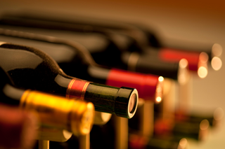

Vinho Tinto Reserva
O vinho tinto é uma bebida alcoólica feita com uvas escuras, conhecida por seu sabor encorpado, cor intensa e boa harmonização com carnes e queijos.
Vinho Branco
O vinho branco é feito com uvas claras e tem sabor leve e refrescante, sendo ideal para acompanhar peixes, frutos do mar e saladas.
Vinho do Porto
O vinho do Porto é um vinho fortificado, doce e encorpado, originário de Portugal, tradicionalmente servido como aperitivo ou sobremesa.
Vinho Seco
O vinho seco é aquele que possui baixo teor de açúcar residual, resultando em um sabor menos adocicado e mais intenso. Pode ser tinto, branco ou rosé, e combina bem com pratos salgados e sofisticados.